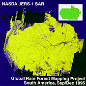

I do contract work for the
Jet Propulsion Laboratory (JPL)
in
Pasadena, CA.
I am on my Nth contract with JPL.
Below are some brief descriptions of the highlights of my
work with JPL in roughly reverse chronological order.
I mostly design and write websites for JPL. Right now, I am
writing a web based cost tracking tool for the Mars Future Studies Program.
I have also written a few javascript applications and HTML layers.
I also have written some heavy duty CGIs (Common Gateway Interface)
for these webpages. In fact, I single handedly
caused a massive interest in what CGIs can do for webpages in my section.
![[Africa CD Cover]](thumb/afrthumb.gif) I also create CDs.
I recently helped create a triple CD-ROM which is part of the
Global Rain Forest Mapping Project.
This triple CD maps out the
rain forest of Central Western Africa.
This is a joint project with
several agencies including NASDA, Japan's counterpart to NASA.
The data was generated from JERS-1, a Japanese satellite orbiting
the Earth,
and is the first
of a series of 20-odd CDs to be produced showing the rain forests.
One can actually see the destruction of these forests
through controlled burning.
This CD is also IS0-9660 compatible which
means it can be read on multiple platforms including PC, Mac and
Unix.
These CDs are unique because the data included here
are not easily accessible or impossible to get from other sources.
I also create CDs.
I recently helped create a triple CD-ROM which is part of the
Global Rain Forest Mapping Project.
This triple CD maps out the
rain forest of Central Western Africa.
This is a joint project with
several agencies including NASDA, Japan's counterpart to NASA.
The data was generated from JERS-1, a Japanese satellite orbiting
the Earth,
and is the first
of a series of 20-odd CDs to be produced showing the rain forests.
One can actually see the destruction of these forests
through controlled burning.
This CD is also IS0-9660 compatible which
means it can be read on multiple platforms including PC, Mac and
Unix.
These CDs are unique because the data included here
are not easily accessible or impossible to get from other sources.

Earlier, I also helped create a double CD-ROM which is part of the
Global Rain Forest Mapping Project.
This double CD maps out the
rain forest of South America.
I am also an upgrade webmaster for the
Galileo homepage.
Galileo was a very successful mission to Jupiter.
Among other things, I have reorganized the
FAQ
and made a
global clickable map of Europa,
one of Jupiter's moons. It is speculated
since Europa is one of the few moons in the solar system
that contain substantial ice/water, there may be life on it!
I was one of the redesigners for the entire
Imaging Radar homepage.
I created an animated GIF below. It's pretty cool.
Click the image below to see it.
![[SIRCED03 CD Cover]](thumb/cd3thumb.gif) I ported an educational CD-ROM from the Macintosh
onto the PC platform. This project is getting a life of its own!
I have ended up rewriting/reformatting most of the
HTML and text files on the CD.
The CD is now ISO-9660 compatible which means
it can be read from multiple platforms including PC, Mac and Unix!
In fact,
the new CD is now on-line!
It is connected directly to the CD-ROM drive on this machine so
it may be a little slow in responding.
I ported an educational CD-ROM from the Macintosh
onto the PC platform. This project is getting a life of its own!
I have ended up rewriting/reformatting most of the
HTML and text files on the CD.
The CD is now ISO-9660 compatible which means
it can be read from multiple platforms including PC, Mac and Unix!
In fact,
the new CD is now on-line!
It is connected directly to the CD-ROM drive on this machine so
it may be a little slow in responding.
My previous tasks were to create webpages for the
entire Radar Science and Engineering Section at
JPL
and a
World Watch homepage for disaster preparedness.
The latter webpage is a
Red Cross-JPL
joint effort.
My
second
six month contract was working with the
Imaging Radar group
and the
Airborne Imaging Radar Synthetic Aperture Radar (AIRSAR) group.
One of my tasks is to bring up a web server on a
Power Macintosh (Mac)
computer and create the
AIRSAR homepage
on it.
I am using the
WebSTAR
web server software for the
Mac.
The
homepage
will have a feature where users may search for various
radar images and the order these images from a
FileMaker Pro
database also located on the
Mac.
I am writing the interface between
WebSTAR
and
FileMaker Pro
in
Applescript!
![[Imaging Radar Logo]](gifs/jirlogo.gif) I also help maintain the
Imaging Radar homepage
which resides on a
DEC
Alpha.
Netscape Communications wanted to link to our homepage
and asked for a logo but we didn't have one!
So I designed the the graphic on the left using
PhotoShop.
This is the official logo for the
Imaging Radar homepage.
We are now listed in the
Netscape galleria!
Pretty cool, huh?
I also help maintain the
Imaging Radar homepage
which resides on a
DEC
Alpha.
Netscape Communications wanted to link to our homepage
and asked for a logo but we didn't have one!
So I designed the the graphic on the left using
PhotoShop.
This is the official logo for the
Imaging Radar homepage.
We are now listed in the
Netscape galleria!
Pretty cool, huh?
My first six month contract at
JPL
was programming in
C
and
Fortran
under the
X-Windows
and
Unix
environment on a
DEC
Alpha and
Silicon Graphics
machines.
I was geocoding radar images for the
Alaskan Synthetic Aperture Radar (SAR) facility.
In case you are curious, this is how
I commute to JPL (62K GIF).
How else am I going to beat the
L. A. freeway traffic?
![[Al Inside]](../gifs/alinside.gif)
![[Shuttle Flyby Spray]](gifs/sprayba2.gif)
![[NASA Logo]](gifs/nasalogo.gif)